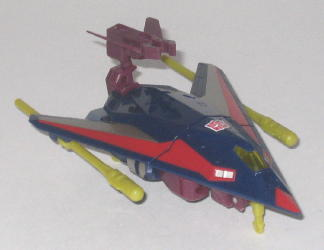
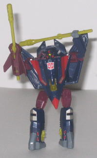
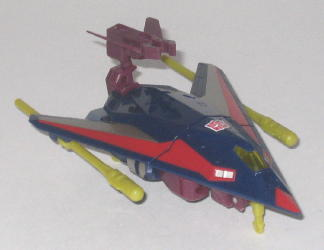
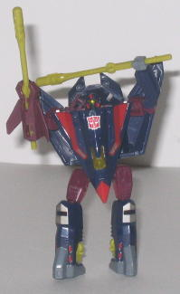
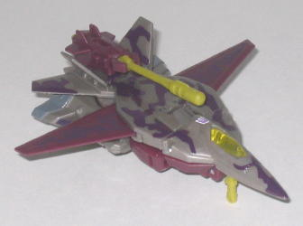
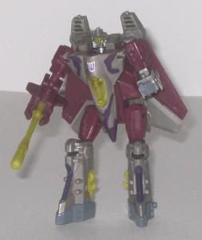

 
Allegiance : Autobot
Size : Basic
Difficulty of Transformation : Easy
Color Scheme : Dark navy blue, light red, dull greenish yellow, flat maroon, and some transparent yellow, silver-gold, and glossy gray
Rating : 8.5
Price
: $10 (U.S.)
Overall Rating
: 8.9
(Like all Universe toys, these two are redecos of earlier TFs; however, since I don't have the original molds, I'll be reviewing these toys completely.)
 Air
Raid
Air
Raid


Allegiance
: Autobot
Size
: Basic
Difficulty of Transformation
: Easy
Color Scheme
: Dark navy blue, light
red, dull greenish yellow, flat maroon, and some transparent yellow, silver-gold,
and glossy gray
Rating
: 8.5
Air Raid, a stealth fighter,
is a redeco of the Generation 2 cyberjet Skyjack. And as such, he has a
similar structure to the other two Cyberjet molds (released in Universe
as
Space Case
and Wind Sheer). In his vehicle
mode, Air Raid looks very nice-- his robot extras tuck together pretty
nicely on his underside, and although they aren't completely invisible--
the bottom of the stealth fighter is a little lower than it should be--
it's pretty close, and meshes in with the overall structure of the jet,
so no real complaints there. Air Raid has a push missile launcher that
hangs above the back end of the jet, which you can put either of Air Raid's
two wing-mounted missiles into to fire. The launcher does look rather odd
though, sticking above the back like that, and even if you collapse it
down so that it's more on level with the main body of the plane, it still
looks off and sticks out a bit. Plus, it doesn't really lock into place
anywhere, unlike all of the other parts on this mode. (Speaking of the
missiles mounted under the wings-- they stick under there surprisingly
well, so no worries about them falling off it you look at the toy wrong
or anything like that.) Oh, and like the other Cyberjets, Air Raid has
three miniature extendable landing gear in this mode, though the wheels
on them don't roll. Air Raid's mold detailing, though not astoundingly
good, is certainly above-average for the time frame in which the mold first
came out (around '94 or so). His color scheme is decent, but, alas, a bit
dull-- the light red paint job on the top could stand to be a bit more
eye-catching instead of just plain stripes down the sides, and the same
goes for the silver-gold paint, as well. The maroon, dull gold, and navy
blue don't particularly clash, but neither of them really tend to catch
the eye, and thus Air Raid's color scheme remains nothing really special.
Air Raid's robot mode,
while generally good, also suffers from a few minor problems that the other
Cyberjets don't have. For one, the chest and upper leg assembly really
doesn't lock into place at all, which gives him a rather unstable feeling.
When transforming the toy, a couple of pieces that are on the inside of
the chest also have a tendency to come loose, and even though it's not
at all difficult to slide them back into their proper places, it can be
a little annoying. And finally, his rather small proportionally when compared
to his large chest-- a problem not apparent with the other Cyberjets, who
have rather slim chests. On the upside, Air Raid has good articulation--
he can move at the head, shoulders, elbows, hips, and knees, and almost
all of those are on ball joints, so he can take on a great number of poses.
I also like the stylized, "three-pronged single optic design" of his head--
though it does seem more suited to a Decepticon than an Autobot. The little
red and gray paint details scattered among the head and legs also help
liven up the color scheme a bit, and the overall smooth, mechanical design
of the mold is pretty cool-looking.
 Wind
Sheer
Wind
Sheer


Allegiance
: Decepticon
Size
: Basic
Difficulty of Transformation
: Easy
Color Scheme
: Flat maroon, glossy
dark reddish brown, milky brownish light gray, and some transparent yellow,
dull greenish yellow, and milky dull bluish gray
Rating
: 9.2
Like Air Raid, Wind Sheer
is a redeco of a G2 Cyberjet-- Hooligan. And Wind Sheer is similar in design
to the other Cyberjets, in his jet vehicle mode-- he has three retractable
landing gear, nice proportions, and his robot legs stick out just a little
from the bottom, but not nearly enough to really harm the mode, as they
still fit in with the overall shape of it. Wind Sheer also has a push missile
launcher at the rear of this mode, but unlike on Air Raid, it pegs into
the top of the plane rather firmly, so it fits in with the overall shape
MUCH more and doesn't stick out. Wind Sheer also has a particular feature
that is unique to this Cyberjet mold-- his wings can fold out (like they
are shown in the above vehicle mode pic) or in towards the body (like in
the robot mode pic). It's nothing really outstanding, but it's a nice feature.
Wind Sheer's overall color scheme is somewhat fitting, if a little on the
dull side- the maroon, gray, and brown are comparatively realistic colors
for a jet. Still, perhaps one semi-bright color could have been used here
and there for contrast. I'm also not too fond of the brownish-red "camoflauge"
patterns painted on him-- they really don't fit it at all for a jet, and
just make the mode look a little hokey when it really shouldn't. As for
the mold detailing, it's a bit sparse when compared to the other Cyberjets,
but certainly not as bad as most of the G1 toys.
Wind Sheer's robot mode
is, again, typical of a Cyberjet, but in this case, most of the downsides
to Air Raid and Space Case have been eliminated. There is no overly bulky
chest; no gap between his shoulders and head; no loose joints; and everything
connects together firmly. In fact, the only real complaint I have about
this mode is the rather unoriginal design element of the toy that is common
to all of the Cyberjets-- the fact that, with the exception of the face,
the robot mode isn't special when compared to the million other jet Transformers
out there. But that isn't a very crippling complaint. Like the other Cyberjets,
Wind Sheer has great articulation-- he can move at the head, shoulders,
elbows, hips, and knees, and every single one of those joints are ball
joints. The look of his face is also fitting for a Decepticon, and, like
the other Cyberjets, is just a cool design. I also like how his right hand
is a missile launcher-- it adds an asymmetrical component to his design
(but in a good way).
Air Raid and Wind Sheer are a pretty good deal for $10-- you get two toys that hold up pretty well on their own, even if they are somewhat unoriginal designs. They both have good articulation, proportions, and design. A few color scheme issues here and there, but really, both are excellent toys that are worthy of picking up, so long as you don't care about the lack of a real gimmick.
No Stats
Review by Beastbot